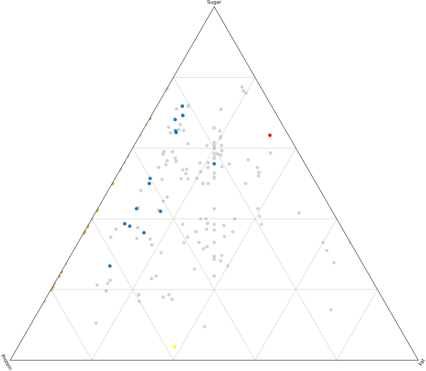

Link to the repo: yogurts
What food has proportionally more sugar than an Oreo cookie, more protein than an Atkins High Protein Shake, more fat than half-and-half, and is often eaten for breakfast? It’s yogurt. Not any one yogurt, of course. But different brands and varieties of yogurt can have completely different nutritional profiles.
Sonoma’s Lowfat Peach Yogurt, for example, has more sugar, relative to fat and protein, than Oreos, ice cream, or any number of foods that are typically regarded as sweet indulgences. siggi’s Icelandic Skyr Nonfat Yogurt, on the other hand, has proportionately more protein than many protein shakes, such as the Atkins High Protein Shake or Kellogg’s Special K French Vanilla Protein Shake. And for those that want more fat in their diet, many plant-based yogurts such as So Delicious Dairy Free’s Coconut Milk Yogurt Alternative or Culina’s Coconut Yogurt Blueberry Lavendar have proportionately more fat than even half-and-half. As all of these products are called yogurt, the potential for confusion among consumers is tremendous.
Below is a ternary plot of the relative sugar, fat, and protein content for each yogurts at Whole Foods.
Yogurt is a significant part of the American diet that’s popularity has grown exponentially over the past several decades. In 2000, Americans consumed an average of 6.5 pounds of yogurt per person. Since then yogurt consumption has more than double. In 2021, the USDA reported that Americans consumed an average of 14.3 pounds of yogurt per person.
That same year the International Food Information Council (IFIC) conducted a survey of over a thousand American dairy consumers. Among those surveyed, 38% eat yogurt for its health benefits and 37% for its nutritional value. Of those who eat yogurt for its health benefits, 70% shared that they believe yogurt promotes general health and wellbeing, and 60% stated that they believe it supports digestive and gut health.
So, how do Americans typically choose which yogurt to eat among the numerous and diverse options lining grocery store shelves? Half of consumers look at nutrition labels and ingredient lists. Many others instead choose based on brand, product names, and marketing claims.
What follows are nutritional profiles of various types of yogurt, grouped based on attributes of their product names. Colors around each type correspond to colors featured in the plot. The yellow and red dots are non-yogurt reference foods (Oreo cookies and Atkins High Protein Shake).
https://www.wholefoodsmarket.com/products/dairy-eggs/yogurt" width="80%"/>
The IFIC survey revealed that, among consumers who eat yogurt for nutritional value, protein content is the most commonly selected as important. Plant-based yogurt consumers especially seek yogurts that claim to be high in protein.
The protein-conscious might gravitate toward the two yogurt products marketed as “Protein Smoothies” in Whole Foods’ yogurt aisle. Surprisingly, both yogurts have much more sugar than protein. Stonyfield Organic’s Lowfat Yogurt Protein Smoothie has over twice as much sugar (24g) as protein (10g) and their Probiotic Peach Lowfat Yogurt Protein Smoothie has nearly three times as much sugar (26g) as protein (9g) per bottle.
Greek yogurt is another kind of yogurt thought to have more protein and less sugar than standard yogurt. Greek yogurt is produced by straining regular yogurt to remove liquid, resulting in its characteristic thick and creamy consistency. At Whole Foods, seven of the top ten yogurts with the highest protein content were Greek yogurts. However, XX of the 53 yogurts marketed as “Greek yogurt” had more sugar than protein, and XX of those had more than twice as much sugar as protein.
Yet another variety of yogurt that is touted as being high in protein is Icelandic skyr. Skyr is thicker, denser, and more tart than Greek yogurt. It is produced by heating skim milk, adding skyr cultures, and gradually draining the whey until all that’s left is a thick and sour cheesy substance. There were 22 Icelandic skyr products at Whole Foods, all had far more protein than sugar, with little fat. One Icelandic skyr had four times as much protein as sugar. For those who prioritize protein and enjoy thicker and tart yogurts, skyr is an undeniably good choice.
 https://www.wholefoodsmarket.com/products/dairy-eggs/yogurt" width="80%"/>
Dairy yogurt consumers often look for “low-fat” labeling, according to the IFIC.
Thirty yogurts at Whole Foods were marketed as either “low-fat” or “non-fat”. The “non-fat” yogurts had zero grams of fat, and the “low-fat” yogurts had very little fat compared to the amount of protein and sugar in a single serving (generally less than 1 part fat to 4 parts protein and sugar).
Some low-fat and non-fat yogurts trade off fat for protein, such as siggi’s Icelandic Skyr Plain Nonfat Yogurt with almost four times as much protein (19g) as sugar (5g). Others instead have added sugars, like Clover Sonoma’s Organic Lowfat Peach Yogurt and Organic Lowfat Strawberry Yogurt, both with over three times as much sugar (23g) as protein (7g). Eleven of the thirty low-fat and non-fat yogurts surveyed had more sugar than protein.

A growing percentage of yogurt consumers are open to non-dairy yogurt alternatives, according to a 2019 survey by dairy-alternative food company Daiya.
Of the yogurt options available at Whole Foods, 20 were plant-based alternatives to dairy yogurts: 14 were coconut-based, 5 were almond-based, and 1 featured both ingredients.
All the almondmilk yogurts were relatively low in protein, with less than 20% protein relative to each yogurt’s sugar and fat content. Many of these yogurts have more sugar than fat, though the difference was marginal in most cases.
Coconut milk yogurts vary more significantly. So Delicious Dairy Free’s Strawberry Banana Coconut Milk Yogurt Alternative, for example, has more grams of sugar than any other ingredient. In contrast, So Delicious Dairy Free’s Unsweetened Vanilla Dairy-Free Coconut Milk Yogurt Alternative is primarily fat-based. Then there are yogurts like siggi’s Mixed Berries Plant Based Coconut Blend, which has just as much protein as fat, and nearly as much sugar. The main conclusion one can draw regarding coconut-based yogurts is just that its name does not really imply much about its overall nutritional profile beyond being vegan.

According to the 2021 IFIC report, 20% of yogurt consumers surveyed said they seek out yogurts that claim to be “natural” and 15% looked for claims of being organic. Sixty-nine yogurts were marked as “organic” via their product name. While there isn’t a particular profile for these yogurts, 111 of the 232 yogurts surveyed had much more sugar content than fat and protein combined. There was also 4 yogurts that were targeted at kids – that is, “kids” was part of the yogurt’s product name. All 4 yogurts had relative sugar content in excess of 50%.
Once plotted altogether the challenge of selecting healthy yogurt options becomes even more evident. Product names are often not meaningfully correlated to a particularly healthy nutritional profile. And at times, these marketing terms – “organic,” “artisanal,” “greek,” and even “protein” to name a few – imply a profile far from the product’s actual nutritional composition. This places the onus upon health-conscious consumers to navigate and evaluate nutrition labels of the numerous “healthy” yogurt products – potentially 232 at Whole Foods online, alone! – to make a truly informed decision.
To make this a little easier, I’ve included below a sortable and searchable summary table of the 232 yogurts surveyed, each with a simplified nutritional profile featuring sugar, protein, and fat content.
A few things I did not have a chance yet to cover include: number of ingredients, probiotic content (live and active cultures), and taste – all factors identified by yogurt consumers surveyed by the IFIC as key in their decision-making process. As a matter of fact, taste was determined to be paramount, and there are interesting write-ups like this about how some yogurt companies are beginning to produce yogurts with little to no sugar, but laden with other ingredients to make the remaining yogurt more amenable to the American palate. Other major caveat is that these are only yogurts available at Whole Foods. According to a USDA dataset, there are thousands of yogurt products out there.
Despite my health-conscious nature, when I go to Whole Foods I gravitate toward noosa. I like it because the yogurt is tart and it features fruit puree with intact chunks. It also seems healthy and artisanal – it’s “finest yoghurt” after all – with both honey and live active cultures. It also can be overwhelming to carefully consider the nutritional value of each product, so I wind up choosing based on label, name, and assumed taste. After doing this evaluation, however, I probably will think twice before reaching for noosa. I did a taste test of yogurts and discovered that skyr is pretty similar in taste, and close enough in texture.